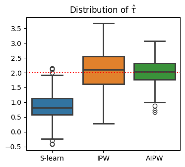
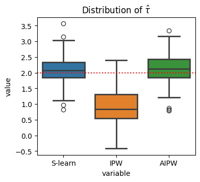

user_df.head()| read_time | dark_mode | male | age | hours | |
|---|---|---|---|---|---|
| 0 | 14.4 | False | 0 | 43.0 | 65.6 |
| 1 | 15.4 | False | 1 | 55.0 | 125.4 |
| 2 | 20.9 | True | 0 | 23.0 | 642.6 |
| 3 | 20.0 | False | 0 | 41.0 | 129.1 |
| 4 | 21.5 | True | 0 | 29.0 | 190.2 |
import pandas as pd
import numpy as np
import matplotlib.pyplot as plt
import seaborn as sns
from IPython.display import HTML
import statsmodels.formula.api as smf
from causalml.match import create_table_one
from joblib import Parallel, delayed
from sklearn.linear_model import LogisticRegression
def generate_data(N=300, seed=1):
np.random.seed(seed)
# Control variables
male = np.random.binomial(1, 0.45, N)
age = np.rint(18 + np.random.beta(2, 2, N)*50)
hours = np.minimum(np.round(np.random.lognormal(5, 1.3, N), 1), 2000)
# Treatment
pr = np.maximum(0, np.minimum(1, 0.8 + 0.3*male - np.sqrt(age-18)/10))
dark_mode = np.random.binomial(1, pr, N)==1
# Outcome
read_time = np.round(np.random.normal(10 - 4*male + 2*np.log(hours) + 2*dark_mode, 4, N), 1)
# Generate the dataframe
df = pd.DataFrame({'read_time': read_time, 'dark_mode': dark_mode, 'male': male, 'age': age, 'hours': hours})
return df
user_df = generate_data(N=300)
ols_model = smf.ols("read_time ~ dark_mode", data=user_df).fit()
ols_summary = ols_model.summary()
results_as_html = ols_summary.tables[1].as_html()
HTML(results_as_html)| coef | std err | t | P>|t| | [0.025 | 0.975] | |
|---|---|---|---|---|---|---|
| Intercept | 19.1748 | 0.402 | 47.661 | 0.000 | 18.383 | 19.967 |
| dark_mode[T.True] | -0.4446 | 0.571 | -0.779 | 0.437 | -1.568 | 0.679 |
In [29]:
user_df.head()| read_time | dark_mode | male | age | hours | |
|---|---|---|---|---|---|
| 0 | 14.4 | False | 0 | 43.0 | 65.6 |
| 1 | 15.4 | False | 1 | 55.0 | 125.4 |
| 2 | 20.9 | True | 0 | 23.0 | 642.6 |
| 3 | 20.0 | False | 0 | 41.0 | 129.1 |
| 4 | 21.5 | True | 0 | 29.0 | 190.2 |
In [34]:
import matplotlib
matplotlib.rcParams['axes.grid'] = False
matplotlib.rcParams['savefig.transparent'] = True
sns.pairplot(
data=user_df,
height=1.5, aspect=1.75,
)
plt.show()
In [35]:
from IPython.display import display, HTML
X = ['male', 'age', 'hours']
table1 = create_table_one(user_df, 'dark_mode', X)
user_df.to_csv("assets/user_df.csv")
table1.to_csv("assets/table1.csv")
HTML(table1.to_html())| Control | Treatment | SMD | |
|---|---|---|---|
| Variable | |||
| n | 151 | 149 | |
| age | 46.01 (9.79) | 39.09 (11.53) | -0.6469 |
| hours | 337.78 (464.00) | 328.57 (442.12) | -0.0203 |
| male | 0.34 (0.47) | 0.66 (0.48) | 0.6732 |
In [36]:
def estimate_e(df, X, D, model_e):
e = model_e.fit(df[X], df[D]).predict_proba(df[X])[:,1]
return e
user_df['e'] = estimate_e(user_df, X, "dark_mode", LogisticRegression())
fig, ax = plt.subplots(figsize=(7,2.75))
sns.kdeplot(
x='e', hue='dark_mode', data=user_df,
# bins=30,
#stat='density',
common_norm=False,
fill=True,
ax=ax
);
ax.set_xlabel("$e(X)$");
In [37]:
weights_denom = user_df['e'] * user_df["dark_mode"] + (1 - user_df['e']) * (1 - user_df["dark_mode"])
inv_weights = 1 / weights_denom
smf.wls(
"read_time ~ dark_mode",
weights=inv_weights,
data=user_df
).fit().summary().tables[1]| coef | std err | t | P>|t| | [0.025 | 0.975] | |
|---|---|---|---|---|---|---|
| Intercept | 18.5871 | 0.412 | 45.158 | 0.000 | 17.777 | 19.397 |
| dark_mode[T.True] | 1.0486 | 0.581 | 1.805 | 0.072 | -0.095 | 2.192 |
In [43]:
from sklearn.linear_model import LinearRegression
def estimate_mu(df, X, D, y, model_mu):
mu = model_mu.fit(df[X + [D]], df[y])
mu0 = mu.predict(df[X + [D]].assign(dark_mode=0))
mu1 = mu.predict(df[X + [D]].assign(dark_mode=1))
return mu0, mu1
mu0, mu1 = estimate_mu(
user_df, X, "dark_mode", "read_time", LinearRegression()
)
print(f'mean(mu0) = {np.mean(mu0):.2f}, mean(mu1) = {np.mean(mu1):.2f}')
print(f'Difference = {np.mean(mu1 - mu0):.2f}')mean(mu0) = 18.27, mean(mu1) = 19.65
Difference = 1.39In [39]:
from econml.dr import LinearDRLearner
model = LinearDRLearner(
model_propensity=LogisticRegression(),
model_regression=LinearRegression(),
random_state=5650
)
model.fit(Y=user_df["read_time"], T=user_df["dark_mode"], X=user_df[X]);
model.ate_inference(X=user_df[X].values, T0=0, T1=1).summary().tables[0]| mean_point | stderr_mean | zstat | pvalue | ci_mean_lower | ci_mean_upper |
|---|---|---|---|---|---|
| 1.321 | 0.549 | 2.409 | 0.016 | 0.246 | 2.396 |
In [44]:
def compare_estimators(X_e, X_mu, D, y, seed):
df = generate_data(seed=seed)
e = estimate_e(df, X_e, D, LogisticRegression())
mu0, mu1 = estimate_mu(df, X_mu, D, y, LinearRegression())
slearn = mu1 - mu0
ipw = (df[D] / e - (1-df[D]) / (1-e)) * df[y]
aipw = slearn + df[D] / e * (df[y] - mu1) - (1-df[D]) / (1-e) * (df[y] - mu0)
return np.mean((slearn, ipw, aipw), axis=1)
def simulate_estimators(X_e, X_mu, D, y):
r = Parallel(n_jobs=8)(delayed(compare_estimators)(X_e, X_mu, D, y, i) for i in range(100))
df_tau = pd.DataFrame(r, columns=['S-learn', 'IPW', 'AIPW'])
return df_tau
# The actual plots
fig, ax = plt.subplots(figsize=(4,3.5))
wrong_reg_df = simulate_estimators(
X_e=['male', 'age'], X_mu=['hours'], D="dark_mode", y="read_time"
)
wrong_reg_plot = sns.boxplot(
data=pd.melt(wrong_reg_df), x='variable', y='value', hue='variable',
ax=ax,
linewidth=2
);
wrong_reg_plot.set(
title="Distribution of $\hat τ$", xlabel='', ylabel=''
);
ax.axhline(2, c='r', ls=':');<positron-console-cell-44>:28: SyntaxWarning: "\h" is an invalid escape sequence. Such sequences will not work in the future. Did you mean "\\h"? A raw string is also an option.
In [45]:
fig, ax = plt.subplots(figsize=(4, 3.5))
wrong_ps_df = simulate_estimators(
['age'], ['male', 'hours'], D="dark_mode", y="read_time"
)
wrong_ps_plot = sns.boxplot(
data=pd.melt(wrong_ps_df), x='variable', y='value', hue='variable',
ax=ax,
linewidth=2
);
ax.set_title("Distribution of $\hat τ$");
ax.axhline(2, c='r', ls=':');
plt.show()<positron-console-cell-45>:13: SyntaxWarning: "\h" is an invalid escape sequence. Such sequences will not work in the future. Did you mean "\\h"? A raw string is also an option.